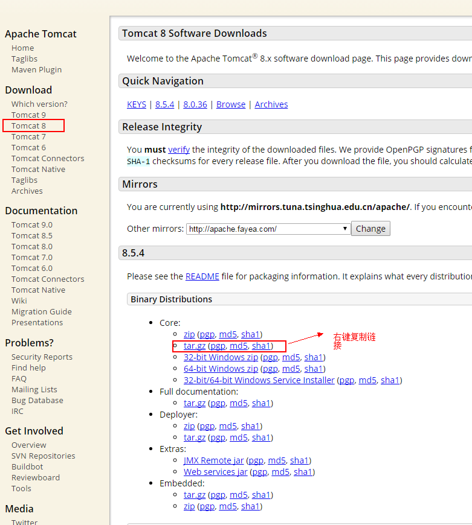

时间：2016-09-03
上篇文章讲了windows平台负载均衡集群的搭建，本篇文章讲解一下在Linux环境下利用nginx+tomcat搭建负载均衡集群
1、安装tomcat
首先，配置JDK环境，在此不做讲解，请自行google
下载tomcat，官网地址：http://tomcat.apache.org/ 随自己的偏好，自己选择版本

- [root@iZ942eskcwaZ root]# wget http://mirrors.tuna.tsinghua.edu.cn/apache/tomcat/tomcat-8/v8.5.4/bin/apache-tomcat-8.5.4.tar.gz
解压
- [root@iZ942eskcwaZ root]# tar -zxvf /root/apache-tomcat-8.5.4.tar.gz
好了，到此，tomcat就可以用了。
既然是集群，那就再复制一台tomcat
- [root@iZ942eskcwaZ root]# cp -r apache-tomcat-6.0.18 apache-tomcat-6.0.18_new
然后配置两个tomcat的server.xml文件，以及webapps文件夹下添加test项目。具体操作和我上一篇文章类似，请查看--windows环境下搭建nginx实现负载均衡,或者，自行google
两台tomcact服务分别为8088和8089，启动两台tomcat服务：
- [root@iZ942eskcwaZ bin]# ./startup.sh
如果想停止tomcat服务，如下：
- [root@iZ942eskcwaZ bin]# ./shutdown.sh
1、安装nginx
具体操作请查看我的另一篇文章--nginx for linux安装
配置nginx.conf文件，在conf目录下，我的配置如下：
user root;
worker_processes 1;
events {
worker_connections 1024;
}
http {
include mime.types;
default_type application/octet-stream;
log_format main '$remote_addr - $remote_user [$time_local] "$request" '
'$status $body_bytes_sent "$http_referer" '
'"$http_user_agent" "$http_x_forwarded_for"';
sendfile on;
keepalive_timeout 65;
#gzip on;
#设定负载均衡的服务器列表
upstream myserver {
#weigth参数表示权值，权值越高被分配到的几率越大
server 127.0.0.1:8088 weight=5;
server 127.0.0.1:8089 weight=5;
}
server {
listen 51500;
server_name localhost;
#charset koi8-r;
#access_log logs/host.access.log main;
location / {
proxy_pass http://myserver;
}
error_page 500 502 503 504 /50x.html;
location = /50x.html {
root html;
}
}
}
启动nginx
- /root/nginx-1.6.2/sbin/nginx
输入以下url测试：
- http://xxx.x.x.x:51500/test
然后按F5刷新，你会看到，你想要的页面是8088和8089服务器提供给你的
nginx其他常用命令：
强制停止 nginx服务
- pkill -9 nginx
查看 nginx服务
- ps -ef | grep nginx
强制停止 nginx服务
- pkill -9 nginx
检查nginx.conf文件配置语法
- /root/nginx-1.6.2/sbin/nginx -t
查看51500端口
- netstat -apn | grep 51500
以上。